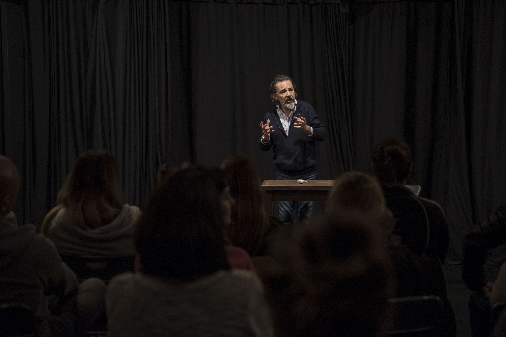

- 
EL ESTUDIO
La actuación como fenómeno expresivo es una actividad de las más lúdicas y terapéuticas que el ser humano pudo haber desarrollado. El haber tenido la posibilidad de transitarla durante gran parte de mi vida me lleva a afirmar algo así. La sensación de felicidad, de libertad, de juego y de creatividad al salir de una clase de teatro en mi adolescencia, siguen presentes al día de hoy.
Sabiendo que el entrenamiento de la voz y la preparación del cuerpo son herramientas fundamentales para el actor, comencé mis estudios formales de actuación en el teatro IFT. Estos conocimientos no solamente me ayudaron a desarrollar el oficio con la absoluta seguridad de estar en el camino correcto, sino que me siguen acompañando al encarar cada nuevo proyecto.
Conservo en mi memoria activa las grandes lecciones que he tenido en el desarrollo de este arte. Mis maestros, los geniales directores y mis queridos y talentosos colegas con los que me he cruzado en el camino siempre van a estar presentes en todo lo que haga. La pasión por actuar, la responsabilidad de contar algo, la necesidad de tomar riesgos, la honestidad de afrontar nuestras limitaciones con el objetivo de superarlas, las ganas, la ilusión y el amor por la actuación me unen a ellos. Y hoy siento la alegría y la energía de poder empezar a transmitir lo que me han enseñado.
Bajo los conceptos del Método de las Acciones Físicas, de Constantin Stanislavski, transitaremos todo lo relacionado al oficio del actor. El estudio profundo y creativo de la técnica vocal, el conocimiento y la preparación del cuerpo en escena y el simple abordaje del deseo de actuar nos va a llevar invariablemente por un camino de constante expresividad. Nuestro principal objetivo es la búsqueda permanente del crecimiento artístico.
En el arte de actuar, la experiencia definitivamente es completa con la presencia del público. Por eso, en todos los niveles, al finalizar cada año, haremos una muestra del trabajo incorporado con la idea de aproximarnos a todo lo que rodea a una propuesta artística. En la expresión del ser humano radica la verdad y la belleza. Acá no existen ni el éxito ni el fracaso, sino la convicción y la sensación de sentirnos libres y partícipes necesarios.
De todas formas, mañana nos va a salir mejor.
Fabián Vena